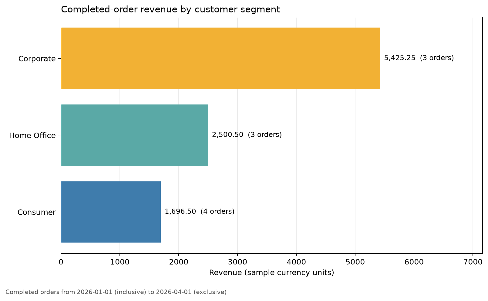

Audience: Data analysts, data scientists, and aspiring data engineers
Theme: Combining SQL’s relational operations with Python’s automation and analytical ecosystem
Learning objectives
By the end of this chapter, you will be able to:
explain the boundary between database work and Python work;
open and close database connections safely;
send parameterized SQL statements from Python;
load query results into pandas without duplicating SQL logic;
use transactions to keep multi-step writes consistent;
validate query outputs before downstream analysis; and
organize database code into a small, repeatable workflow.
Why combine SQL and Python?
SQL and Python solve different parts of the same data problem. SQL is designed to filter, join, aggregate, and update relational data close to where it is stored. Python is well suited to orchestration, validation, statistical analysis, visualization, and integration with files, APIs, and machine-learning libraries.
A reliable workflow does not move every row into Python and then recreate database operations with dataframe code. Instead, it assigns work deliberately:
Task
Preferred layer
Reason
Filter rows and columns
SQL
Reduces data transferred from the database
Join relational tables
SQL
Uses database keys and query optimization
Aggregate large tables
SQL
Computes close to storage
Control parameters and dates
Python
Supports reusable automation
Validate returned data
Python
Expressive checks and clear failures
Plot and model results
Python
Rich analytical ecosystem
Protect multi-step writes
Database transaction
Preserves consistency
The key principle is simple: use SQL to shape relational data and Python to control, validate, and extend the workflow.
Chapter case study
This chapter uses a small retail database with two tables:
customers: one row per customer; and
orders: one row per order, linked to customers by customer_id.
The workflow answers a practical question:
Which customer segments generated the most completed-order revenue during a selected period?
The complete example is implemented in scripts/python/06-sql-python-integration.py. It reads deterministic records from data/raw/06-customers.csv and data/raw/06-orders.csv, creates a local SQLite database with queries/06-create-retail-schema.sql, executes queries/06-segment-revenue.sql, validates the result, writes a CSV summary, and generates a plot.
SQLite is used because it requires no separate database server. The same workflow structure applies to PostgreSQL, MySQL, SQL Server, and other database systems, although their drivers and connection settings differ.
The Python database workflow
A database-enabled Python program usually follows six stages:
obtain connection settings;
connect to the database;
begin a transaction when writes must be atomic;
execute parameterized SQL;
validate and use the returned data; and
commit or roll back, then close the connection.
Keeping these stages visible makes failures easier to diagnose. A connection failure is different from an invalid query, and both are different from a valid query that returns unexpected data.
Connecting safely
Python’s standard-library sqlite3 module implements the Python Database API specification. A context manager provides a clear connection boundary:
Code
from pathlib import Pathimport sqlite3database_path = Path("data/processed/06-retail.db")database_path.parent.mkdir(parents=True, exist_ok=True)with sqlite3.connect(database_path) as connection: connection.execute("PRAGMA foreign_keys = ON") customer_count = connection.execute("SELECT COUNT(*) FROM customers" ).fetchone()[0]
The with block gives the connection a limited lifetime and coordinates transaction handling. Explicitly enabling foreign-key enforcement is important in SQLite because foreign-key constraints are not automatically enforced by every connection.
For a server database, connection credentials should come from environment variables or a managed secret store—not from source code committed to Git.
Avoid printing complete connection URLs because they may contain usernames, passwords, hostnames, or access tokens.
Creating a schema from Python
Schema definitions can be executed from Python while remaining ordinary SQL:
Code
connection.executescript(""" CREATE TABLE IF NOT EXISTS customers ( customer_id INTEGER PRIMARY KEY, customer_name TEXT NOT NULL, segment TEXT NOT NULL CHECK (segment IN ('Consumer', 'Corporate', 'Home Office')) ); CREATE TABLE IF NOT EXISTS orders ( order_id INTEGER PRIMARY KEY, customer_id INTEGER NOT NULL, order_date TEXT NOT NULL, status TEXT NOT NULL CHECK (status IN ('completed', 'pending', 'cancelled')), order_total REAL NOT NULL CHECK (order_total >= 0), FOREIGN KEY (customer_id) REFERENCES customers(customer_id) ); """)
IF NOT EXISTS prevents this teaching example from failing when rerun. In a production system, schema evolution should normally be managed with versioned migrations so every structural change is explicit and reviewable.
Sending values safely with parameters
Never construct a query by inserting untrusted values into an SQL string:
Code
# Unsafe: do not usequery =f"SELECT * FROM orders WHERE status = '{status}'"
String interpolation mixes SQL syntax with data. It can create quoting bugs and SQL-injection vulnerabilities. Use the parameter style required by the database driver:
Code
query ="SELECT * FROM orders WHERE status = ?"rows = connection.execute(query, (status,)).fetchall()
SQLite uses ? placeholders. Other drivers may use %s, :name, or another documented style. Parameters represent values, not SQL identifiers. A table name or sort direction should be selected from a controlled allowlist rather than accepted directly from user input.
Parameterizing a reporting period
The case-study query accepts start and end dates:
SELECT
c.segment,
COUNT(*) AS completed_orders,
ROUND(SUM(o.order_total), 2) AS revenue,
ROUND(AVG(o.order_total), 2) AS average_order_value
FROM orders AS o
JOIN customers AS c
ON o.customer_id = c.customer_id
WHERE o.status = 'completed'
AND o.order_date >= :start_date
AND o.order_date < :end_date
GROUP BY c.segment
ORDER BY revenue DESC;
The query uses a half-open interval: start_date <= order_date < end_date. This convention composes cleanly across adjacent reporting windows and avoids ambiguity at the upper boundary.
Reading SQL results into pandas
pandas.read_sql_query() turns a relational result into a dataframe:
The database still performs the join, filter, and aggregation. Python receives only the small summary needed for validation and plotting.
This is preferable to loading entire tables and joining them in pandas when:
the database tables are large;
indexes can accelerate the filter;
database permissions restrict accessible columns or rows; or
several applications need the same relational logic.
Pandas is appropriate after the query boundary when the result is small enough for memory and the next operation belongs to the analytical layer.
Transactions and atomic writes
A transaction treats a related group of database statements as one unit. Either all statements succeed, or none of their effects remain.
Consider recording an order and its audit event. If the order is inserted but the audit insert fails, committing only the first statement would leave incomplete history. A transaction prevents that partial state.
Code
try:with connection: connection.execute(""" INSERT INTO orders (order_id, customer_id, order_date, status, order_total) VALUES (?, ?, ?, ?, ?) """, order_record, ) connection.execute(""" INSERT INTO order_events (order_id, event_type) VALUES (?, ?) """, (order_record[0], "created"), )except sqlite3.IntegrityError as error:raiseRuntimeError("Order write was rolled back") from error
The transaction boundary should match a business operation, not an arbitrary number of statements.
Commit and rollback
Commit makes all successful changes in the transaction durable.
Rollback discards changes made since the transaction began.
Rollback is not merely error cleanup. It is part of the correctness model: downstream users should never observe half of an operation that was intended to be indivisible.
Bulk inserts
Use executemany() for repeated inserts instead of issuing one separately managed transaction per row:
For very large loads, database-specific bulk-loading tools are usually faster. Regardless of method, validate row counts, required fields, key uniqueness, and rejected records.
Validate at the boundary
A query can execute successfully and still return unsuitable data. Python should validate the contract expected by later steps.
Code
required_columns = {"segment","completed_orders","revenue","average_order_value",}missing_columns = required_columns.difference(summary.columns)if missing_columns:raiseValueError(f"Missing columns: {sorted(missing_columns)}")if summary.empty:raiseValueError("The reporting query returned no rows")if summary["revenue"].lt(0).any():raiseValueError("Revenue cannot be negative")
Useful checks include:
required columns are present;
the result is not unexpectedly empty;
identifiers are unique where required;
numeric ranges are credible;
dates are inside the requested window; and
totals reconcile with a trusted control query.
Failing early with a precise message is safer than generating an attractive but incorrect chart.
Keep SQL readable
Long SQL strings embedded throughout Python modules become hard to test and maintain. Use one of three patterns depending on project size:
short, single-purpose SQL constants in the Python module;
query functions that accept explicit parameters; or
separate .sql files for long, shared, or independently reviewed queries.
The chapter stores the query separately and wraps its execution in a function:
The function creates a narrow interface: callers provide dates and receive a dataframe. Connection management remains visible to the orchestration layer.
A reproducible chapter workflow
Run the complete example from the repository root:
The database is a reproducible generated artifact. The script removes and rebuilds only its chapter-specific database, which prevents old rows from changing the demonstration result.
Interpreting the result

Figure 7.1: Completed-order revenue by customer segment.
Figure Figure 7.1 is based on the aggregated query result, not on entire raw tables loaded into Python. The labels show both revenue and completed-order counts, keeping the graphic connected to the relational calculation.
The plot answers the reporting question, but the workflow also produces machine-readable outputs. The CSV can be inspected or reused, while the JSON summary records the reporting window, database row counts, and reconciliation status.
Reconciliation
An important validation is to compare the dataframe’s total revenue with a separate control query:
Code
control_total = connection.execute(""" SELECT ROUND(SUM(order_total), 2) FROM orders WHERE status = 'completed' AND order_date >= ? AND order_date < ? """, (start_date, end_date),).fetchone()[0]reported_total =round(float(summary["revenue"].sum()), 2)if reported_total != control_total:raiseValueError("Segment totals do not reconcile")
This check guards against accidental row loss or multiplication during joins. In real pipelines, reconciliations often compare source counts, target counts, monetary totals, or hashes across stages.
Common failure modes
Loading too much data
Symptom: Python uses excessive memory or takes a long time before analysis begins.
Correction: select only required columns, filter early, aggregate in SQL, or read results in chunks.
Building SQL with string interpolation
Symptom: queries break on quotes or expose the application to SQL injection.
Correction: use driver-supported parameters for values and allowlists for identifiers.
Leaving connections open
Symptom: the application exhausts database connections or retains locks.
Correction: use context managers and keep connection lifetimes deliberate.
Treating successful execution as valid data
Symptom: downstream outputs are empty, duplicated, incomplete, or implausible even though no SQL error occurred.
Correction: validate schema, cardinality, ranges, and reconciliations immediately after querying.
Committing partial business operations
Symptom: related tables disagree after one statement fails.
Correction: place related writes inside one transaction and verify rollback behavior.
Hiding every operation behind one abstraction
Symptom: developers cannot see when connections begin, which query runs, or where transactions commit.
Correction: use small functions with explicit parameters and return types. Abstraction should clarify boundaries, not erase them.
Extending to server databases
The case study uses SQLite, but a server database adds operational concerns:
install the appropriate driver;
obtain credentials securely;
configure encrypted connections;
use connection pooling for long-running applications;
set connection and statement timeouts;
understand the database’s transaction isolation behavior; and
log query names and durations without logging sensitive parameter values.
Libraries such as SQLAlchemy can provide a consistent connection and transaction interface across database systems. Even with an abstraction layer, understanding SQL, transactions, and driver parameters remains essential.
Practice exercises
Exercise 1: Add a region dimension
Add a region column to customers, update the sample records, and change the report to group by both region and segment.
Exercise 2: Test an empty period
Run the reporting function for a date range with no completed orders. Decide whether an empty dataframe should be accepted, warned about, or treated as an error for this workflow.
Exercise 3: Verify rollback
Inside one transaction, insert a valid order followed by an invalid order with a nonexistent customer_id. Confirm that neither row remains after the integrity error.
Exercise 4: Add a query plan check
Create an index on orders(order_date, status) and use SQLite’s EXPLAIN QUERY PLAN to examine whether the reporting query can use it.
Exercise 5: Add another external query
Create queries/06-customer-order-counts.sql, load it with Path.read_text(), and produce a second validated report grouped by customer.
Chapter checklist
Before considering a Python–SQL workflow complete, confirm that:
Key takeaways
SQL and Python are complementary. SQL expresses relational work close to the data, while Python coordinates parameters, checks contracts, and connects query results to the wider analytical ecosystem.
The most important habits are to parameterize values, manage connection and transaction boundaries explicitly, validate returned data, and keep the SQL–Python interface small. These habits turn an exploratory query into a reproducible component that can later become part of a data pipeline.